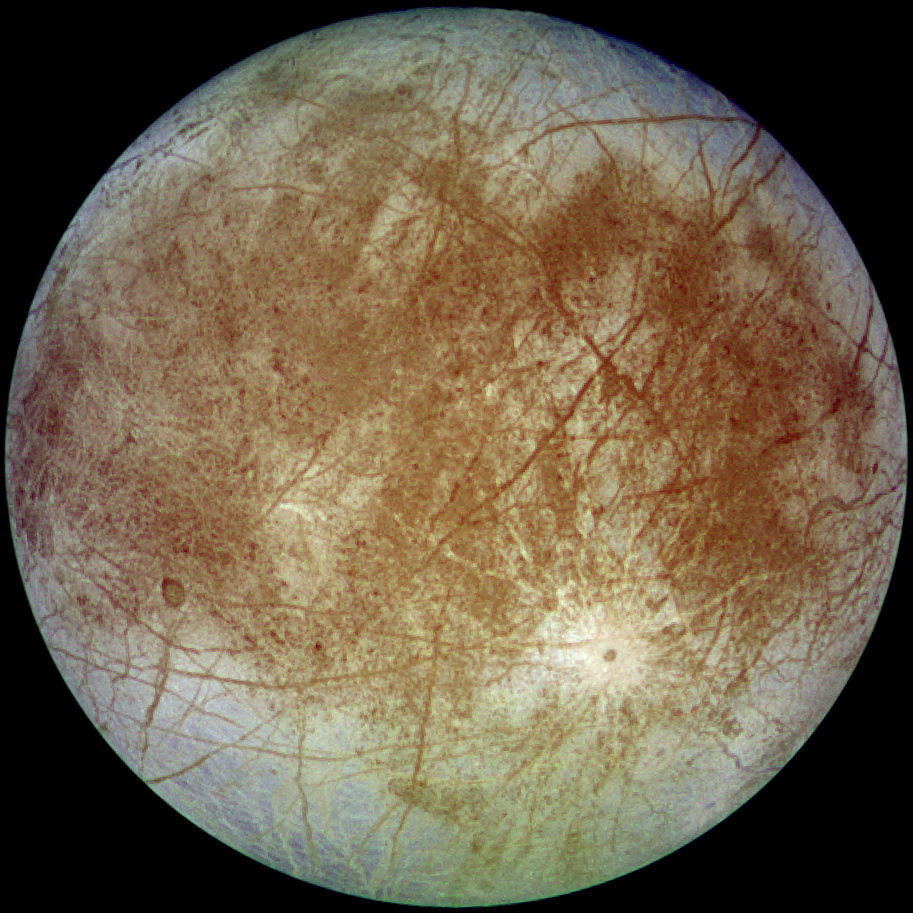
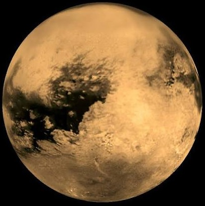
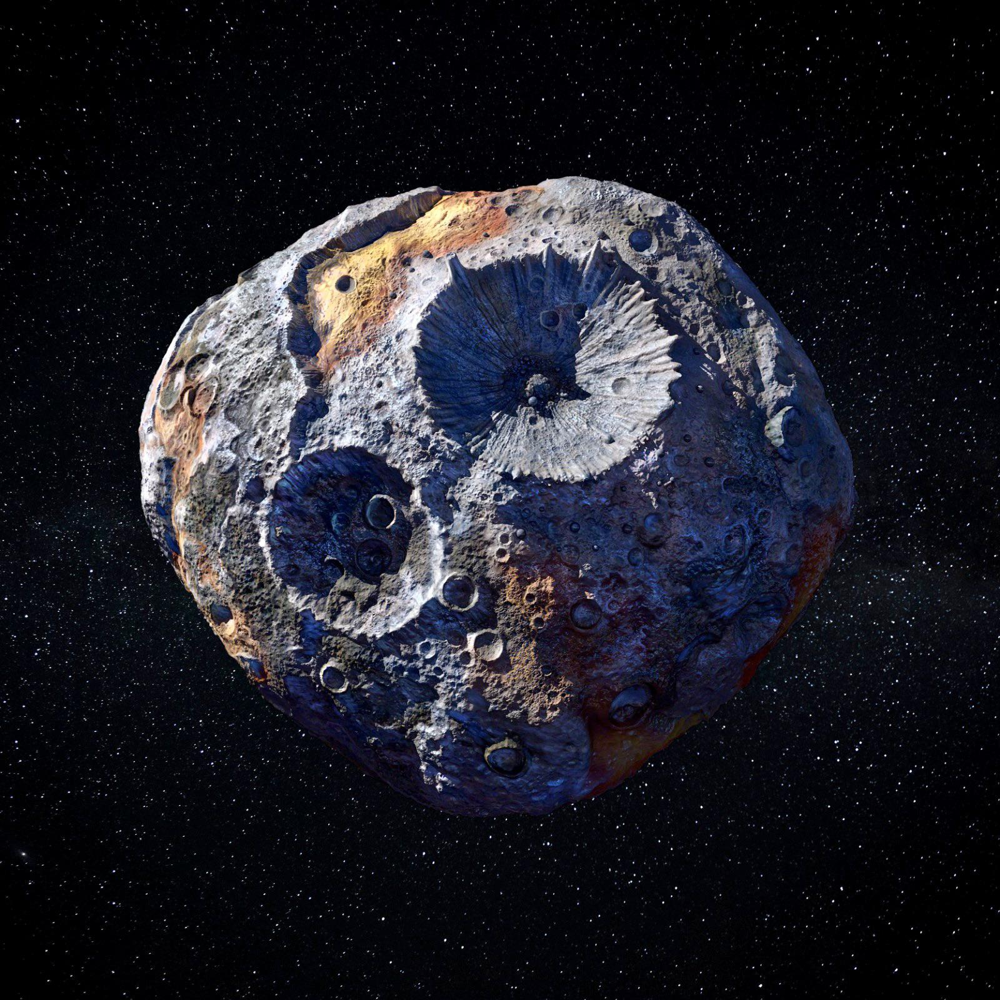

CEYLON INSTITUTE OF SPACE SCIENCE // EDUCATIONAL BRIEFING MANUAL
Designing spacecraft for deep-space exploration requires balancing severe physical constraints: mass budgets, launch vehicle payload limits, electrical power degradation, thermal protection, and communication bandwidth bottlenecks.
Europa is Jupiter's sixth closest moon. Beneath its fractured 15–25 km ice shell lies a global subsurface liquid ocean containing twice as much water as all of Earth's oceans combined, making it one of the premier targets in the search for extraterrestrial habitability.

Titan is Saturn's largest moon and the only moon in the Solar System with a dense nitrogen-rich atmosphere and stable surface bodies of liquid hydrocarbons (methane and ethane seas).

Located in the main asteroid belt between Mars and Jupiter, 16 Psyche is a unique metallic asteroid. Unlike rocky or icy bodies, scientists believe Psyche is the exposed nickel-iron core of an early planetesimal, offering humanity a direct window into the inaccessible molten cores of terrestrial planets like Earth.

Explore official mission overviews and simulation walkthroughs provided by NASA Jet Propulsion Laboratory (JPL):